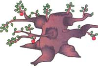

Rx For Neglected Apple Trees
Five steps to bring back fruit, including restoration, pruning, scraping, waiting, protecting.
By Mickey Telford
October/November 1995
When I first wandered into the woods of my homestead, I was surprised to amble into a small stand of ancient apple trees hidden in a larger gathering of elm and poplar. I'd bet they were eighty or a hundred years old, gnarled and loaded with dead wood and sucker growth and not one producing enough good fruit to make a glass of jelly. Well, my family and I needed that food and immediately set about doctoring those old-timers back into limited production.
The first problem is how to tell the once-cultivated, but now gone wild trees from the hundreds of truly wild seedlings. Apples don't grow true from seed, and a tree that just grew is seldom good for much but rootstock to graft good-bearing scions onto. The problem is, many people do just that: graft fancier wood onto native seedlings. So your trees will in all likelihood not be laid out in a nice orchard, but grow more or less wherever a seed had sprouted. Look for trees that are unnaturally shaped, with several large, low limbs that grow out flat and show peculiar crooks that reveal years of being pruned-even though the interior of the tree may have a straight, natural-looking central leader. Then choose by taste, nibbling the few puny apples growing in the crowns. Size and yield are qualities you might be able to finesse, but taste is most definitely in the hands of the Almighty.
1. Pruning. First use a chain saw to clear out all the brush around each tree. In the late fall, the trees are dormant and all the dead wood and hollow or badly diseased limbs can be cut away easily. Overgrown trees should lose crowns and crossing or rubbing branches removed. Try to leave each tree its four or five healthiest limbs, though several might prove to have only one or two worth saving. If a quarter or more of the tree must be removed, do it over two or three years' time or you will kill it for sure. Remove the straight central leader (developed from a limb after pruning ceased) in year one, all but three to five large limbs in year two, and all but three to five branches per remaining limb in year three.
2. Scraping. Scraping each trunk and limb means chipping off the dark, mossy scales that bugs love to hide under. Where a broken limb or woodpecker hole had allowed rot to enter, dig out as much of the black, wet wood as you can reach and paint the inside with homemade tree wound dressing (thick roofing tar with enough kerosene on top to permit brushing out a workable glop). This concoction also goes onto scars where limbs are removed.
3. Waiting. Next spring, plug all the holes where rot had been removed with cement patches, scrape the branches till each takes on a pink, youthful glow, douse each tree well with a miscible oil (a pure, harmless mineral oil that will dissolve in water), spray, cross your fingers, and sit back to see what will happen.
Such severe pruning can throw even young healthy trees out of bearing, so don't expect much the first year. The trees may flower sparsely, leafed out only at their tip ends, and seem determined to spend the year making suckers. Each of these long, shiny whips should be snipped off as it appears. You should cut a sucker off flush with trunk or branch to prevent regrowth, but need to leave a fraction of an inch of the limb base or branch so it can grow a ring of necessary scar tissue. The trees will seem to sulk through the summer. Don't be discouraged if several just give up, particularly if your autumns tend to be dry. Old trees demand such a drastic "cure," though at times too much wood is removed and the trees can't produce enough leaves to feed their trunk and root systems.
4. Protecting. Trees that make it through the fall and winter, though, begin to perk up. But they still need help avoiding small marauders. Thanks in part perhaps to the titanic overspraying of orchard trees with powerful insecticides, the natural balance of insect predators seems to be indefinitely out of whack. You cannot grow an apple anymore without some kind of special pest control measures. I treat mine not only with twice yearly sprayings of miscible oil (once in spring just as the buds begin to swell, another just after they have cracked open but before the petals have popped out), but I follow the oil on the second go-round with a spray of wettable sulfur and rotenone. Then when the petals fall off, I spray again with the sulfur, rotenone, and Ryania, another natural insect repellent. You can repeat the three-part spray ever two weeks or after every hard rain if you wish; the more spray, the more supermarket-perfect will be the fruit.
Some purists might even object to this amount of spraying, but all the components are harmless to humans. The oil will kill over-wintering eggs of many bugs, scale in particular. The sulfur keeps down several fungus diseases and combines with the oil to kill off mites that can ruin developing buds. Rotenone and Ryania are effective against just about any bug that chews plants, but it doesn't harm most natural predators. I found that the sprayings keep down aphids long enough for the young fruit nubbins to develop to large enough size that the aphid's bite won't ruin the fruit. By then the natural wasp parasite and ladybird population should keep the bugs in check. The Ryania is particularly effective against the first generation of another immigrant pest, the codling moth. Tenacious and seemingly invincible to a variety of pesticides within a few years of spraying, the moth larvae are, nevertheless, put off by Ryania before they can burrow into the young fruit. You can obtain these natural insecticides in individual containers and in wettable-powder mixes through most mail-order seed and nursery catalogs.
Even more important than the spray to the long-term health of the orchard is a twice weekly trip to remove the ground fall fruit ignored by woodland animals. Most falls are caused by one worm or another, and if left on the ground, the worm would burrow out into the soil, pupate, and emerge as a new egg-laying generation. Any livestock will relish the fallen fruit, including goats, rabbits, and hogs.
5. Grab the Basket. In the second year, a creaky old yellow apple producer turned out a good two bushels. In three years time the old yellow apple was contributing our full year's requirement of applesauce, and the various reds produced plenty of fall eating and, with careful inspection, enough worm-free fruit to keep us through much of the winter. I won't pretend that these old-timers are on perfect par with new young trees in quantity of output, but for good fruit in the least time, rejuvenating a few neglected apple trees can't be beat.
|
 |
 |
 |